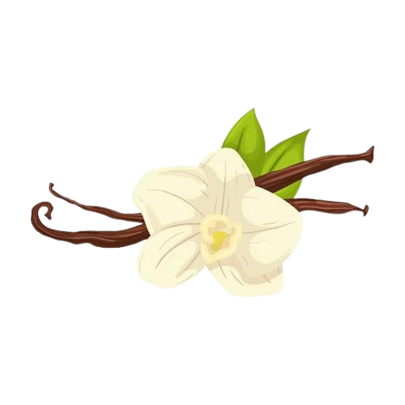

The 500-year journey of vanilla—from sacred orchid to global obsession, and the climate crisis threatening its last breath.
Vanilla is the world's second-most expensive spice. But behind its sweet aroma lies a fragile supply chain, reliant on one specific bee, one 12-year-old's hand-pollination method, and one climate-vulnerable island—Madagascar.
This interactive documentary uses climate data, trade routes, and price forecasts to trace how rising temperatures are rewriting the fate of an entire agricultural heritage. What happens when a crop's "perfect recipe" no longer exists anywhere on Earth?